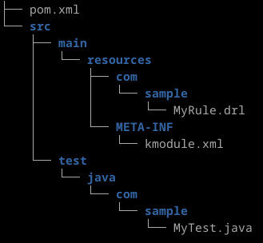

參考資訊：
https://github.com/tkobayas/kiegroup-examples
https://www.cnblogs.com/lonecloud/p/12333309.html
https://blog.kie.org/2021/11/drools-basic-examples.html
資料結構

package com.sample
rule Hello
when
eval(true);
then
System.out.println("Hello, world!");
end
src/main/resources/META-INF/kmodule.xml
<?xml version="1.0" encoding="UTF-8"?> <kmodule xmlns="http://jboss.org/kie/6.0.0/kmodule"> </kmodule>
src/test/java/com/sample/MyTest.java
package com.sample;
import org.junit.Test;
import org.kie.api.KieBase;
import org.kie.api.KieServices;
import org.kie.api.runtime.KieContainer;
import org.kie.api.runtime.KieSession;
public class MyTest {
@Test
public void testRules() {
KieServices ks = KieServices.Factory.get();
KieContainer kcontainer = ks.getKieClasspathContainer();
KieBase kbase = kcontainer.getKieBase();
KieSession ksession = kbase.newKieSession();
ksession.fireAllRules();
ksession.dispose();
}
}
pom.xml
<?xml version="1.0" encoding="UTF-8"?>
<project xmlns="http://maven.apache.org/POM/4.0.0"
xmlns:xsi="http://www.w3.org/2001/XMLSchema-instance"
xsi:schemaLocation="http://maven.apache.org/POM/4.0.0 http://maven.apache.org/xsd/maven-4.0.0.xsd">
<modelVersion>4.0.0</modelVersion>
<groupId>com.sample</groupId>
<artifactId>basic-example</artifactId>
<version>1.0.0-SNAPSHOT</version>
<packaging>kjar</packaging>
<properties>
<maven.compiler.source>17</maven.compiler.source>
<maven.compiler.target>17</maven.compiler.target>
<drools.version>10.0.0</drools.version>
</properties>
<repositories>
<repository>
<id>jboss-public-repository-group</id>
<name>JBoss Public Repository Group</name>
<url>http://repository.jboss.org/nexus/content/groups/public/</url>
<releases>
<enabled>true</enabled>
<updatePolicy>never</updatePolicy>
</releases>
<snapshots>
<enabled>true</enabled>
<updatePolicy>daily</updatePolicy>
</snapshots>
</repository>
</repositories>
<dependencies>
<dependency>
<groupId>org.drools</groupId>
<artifactId>drools-engine-classic</artifactId>
<version>${drools.version}</version>
</dependency>
<dependency>
<groupId>ch.qos.logback</groupId>
<artifactId>logback-classic</artifactId>
<version>1.2.9</version>
</dependency>
<dependency>
<groupId>junit</groupId>
<artifactId>junit</artifactId>
<version>4.13.1</version>
<scope>test</scope>
</dependency>
</dependencies>
<build>
<plugins>
<plugin>
<groupId>org.apache.maven.plugins</groupId>
<artifactId>maven-compiler-plugin</artifactId>
<version>3.8.1</version>
</plugin>
<plugin>
<groupId>org.kie</groupId>
<artifactId>kie-maven-plugin</artifactId>
<version>${drools.version}</version>
<extensions>true</extensions>
</plugin>
</plugins>
</build>
</project>
測試
$ mvn clean test
Hello, world!